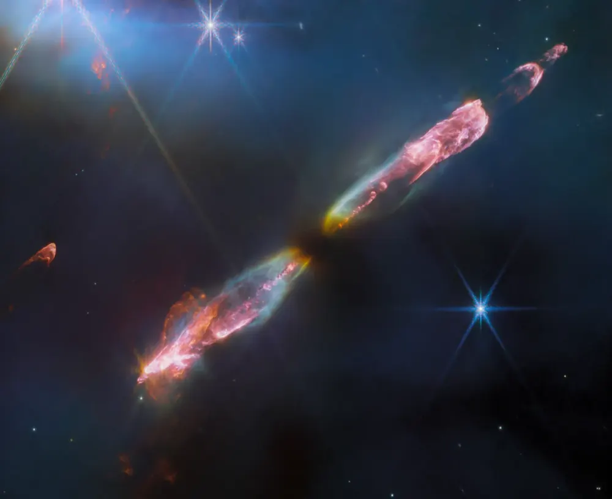
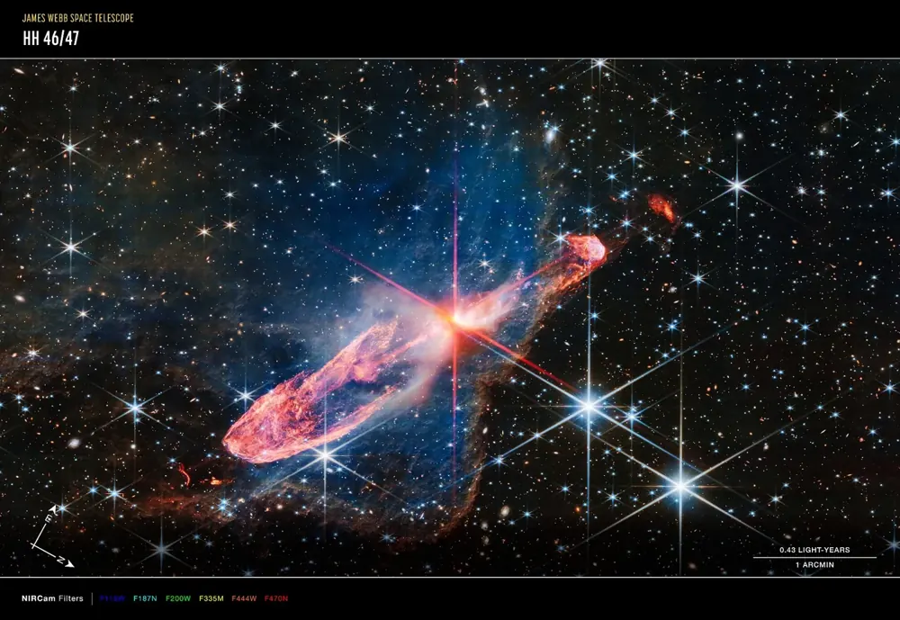
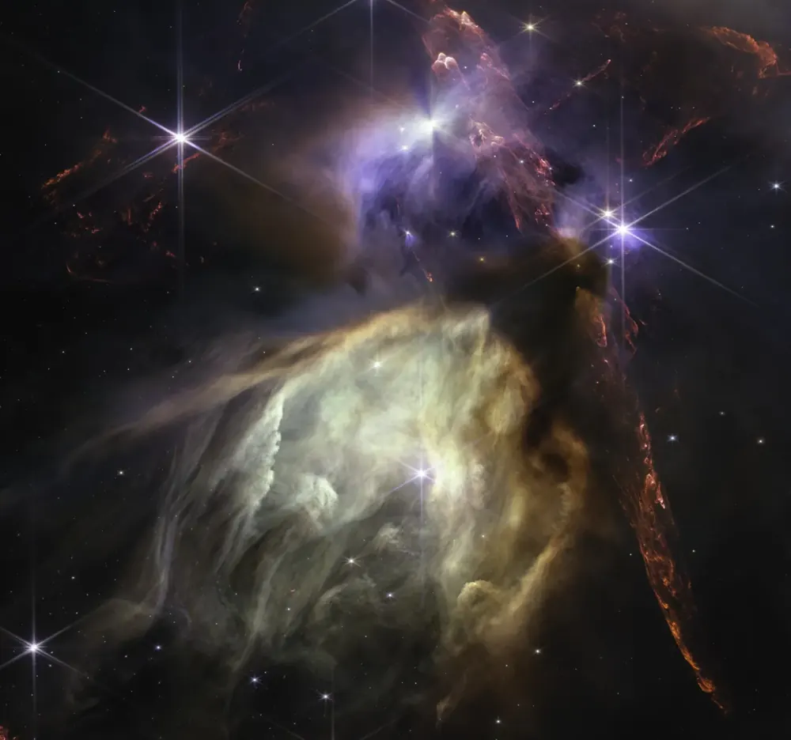

← StarsतारेEstrellasEstrelasÉtoilesالنجوم
How stars are bornतारे कैसे बनते हैंCómo nacen las estrellasComo nascem as estrelasComment naissent les étoilesكيف تولد النجوم
Every star starts as a cold, dark cloud. Gravity does the rest.हर तारा एक ठंडे, अँधेरे बादल से शुरू होता है। बाक़ी काम गुरुत्वाकर्षण करता है।Toda estrella empieza como una nube fría y oscura. La gravedad hace el resto.Toda estrela começa como uma nuvem fria e escura. A gravidade faz o resto.Chaque étoile commence comme un nuage froid et sombre. La gravité fait le reste.يبدأ كل نجم سحابةً باردة ومظلمة، والجاذبية تتولى الباقي.

📷 NASA, ESA, CSA, STScI; J. DePasquale, A. Koekemoer, A. Pagan (STScI) · Public domain

📷 ESA/Webb, NASA, CSA, Tom Ray (Dublin) · Public domain

📷 NASA, ESA, CSA, J. DePasquale (STScI) · Public domain

📷 NASA, ESA, CSA, STScI, K. Pontoppidan (STScI) · Public domain
1. A cold cloud1. एक ठंडा बादल1. Una nube fría1. Uma nuvem fria1. Un nuage froid1. سحابة باردة
Space between the stars is not completely empty. In places there are huge clouds of gas, mostly hydrogen, mixed with dust. These molecular clouds are very cold, about minus 260 °C, and can be hundreds of light-years across.तारों के बीच की जगह पूरी तरह ख़ाली नहीं है। कहीं-कहीं गैस के विशाल बादल हैं, ज़्यादातर hydrogen, धूल के साथ मिली हुई। ये molecular clouds बहुत ठंडे होते हैं, लगभग माइनस 260 °C, और सैकड़ों प्रकाश-वर्ष चौड़े हो सकते हैं।
2. Something gives it a push2. कोई चीज़ धक्का देती है2. Algo le da un empujón2. Algo dá um empurrão2. Quelque chose la pousse2. شيء ما يدفعها
A cloud can float for millions of years. Then something squeezes part of it: the shock wave of a nearby supernova, a collision with another cloud, or the pull of a passing spiral arm. The densest knots start to collapse under their own gravity.एक बादल लाखों साल तक तैरता रह सकता है। फिर कोई चीज़ उसके किसी हिस्से को दबाती है: पास के supernova की shock wave, किसी दूसरे बादल से टक्कर, या गुज़रती spiral arm का खिंचाव। सबसे घने हिस्से अपने ही गुरुत्वाकर्षण से सिकुड़ने लगते हैं।
3. A protostar3. Protostar (शिशु तारा)3. Una protoestrella3. Uma protoestrela3. Une protoétoile3. نجم أولي
As a knot shrinks it spins faster and flattens into a disk, the way a pizza maker spins dough. The middle gets hotter and hotter. This glowing ball is a protostar. It shines from the heat of falling gas, not yet from fusion.सिकुड़ते हुए वह हिस्सा तेज़ घूमने लगता है और चपटी disk बन जाता है, जैसे पिज़्ज़ा बनाने वाला आटा घुमाता है। बीच का हिस्सा गर्म, और गर्म होता जाता है। यह चमकता गोला protostar है। यह गिरती गैस की गर्मी से चमकता है, अभी fusion से नहीं।
Young stars also shoot jets of gas out of their poles at hundreds of kilometres per second. Where the jets hit the cloud they make glowing knots called Herbig-Haro objects.नए तारे अपने ध्रुवों से सैकड़ों किलोमीटर प्रति सेकंड की रफ़्तार से गैस की धाराएँ (jets) भी फेंकते हैं। जहाँ ये jets बादल से टकराते हैं, वहाँ चमकती गाँठें बनती हैं जिन्हें Herbig-Haro objects कहते हैं।
4. Fusion switches on: a star is born4. Fusion शुरू: तारे का जन्म4. Se enciende la fusión: nace una estrella4. A fusão começa: nasce uma estrela4. La fusion s’allume : une étoile naît4. يبدأ الاندماج: يولد نجم
When the core reaches about 10 million °C, hydrogen nuclei crash together hard enough to fuse into helium. Each fusion turns a tiny bit of mass into energy (E = mc²). The outward push of that energy now balances gravity, and the star stops shrinking. It has joined the main sequence, where it will spend about 90% of its life.जब केंद्र लगभग 1 करोड़ °C तक पहुँचता है, hydrogen के nuclei इतनी ज़ोर से टकराते हैं कि जुड़कर helium बन जाते हैं। हर fusion थोड़े से द्रव्यमान को ऊर्जा में बदलता है (E = mc²)। उस ऊर्जा का बाहर की ओर दबाव अब गुरुत्वाकर्षण को संतुलित कर देता है, और तारा सिकुड़ना बंद कर देता है। अब यह main sequence पर है, जहाँ यह अपने जीवन का लगभग 90% समय बिताएगा।
5. Leftovers make planets5. बचे हुए हिस्से से ग्रह5. Los restos forman planetas5. As sobras formam planetas5. Les restes forment des planètes5. البقايا تصنع الكواكب
The disk around a young star does not go to waste. Dust sticks into pebbles, pebbles into rocks, rocks into planets. Our Earth and the other planets formed this way from the disk around the young Sun, about 4.6 billion years ago.नए तारे के चारों ओर की disk बेकार नहीं जाती। धूल चिपककर कंकड़ बनती है, कंकड़ से पत्थर, पत्थरों से ग्रह। हमारी पृथ्वी और बाक़ी ग्रह लगभग 4.6 अरब साल पहले नए सूर्य के चारों ओर की disk से इसी तरह बने।
Star nurseries you can seeतारों के पालने जो आप देख सकते हैंViveros de estrellas que puedes verBerçários de estrelas que você pode verPouponnières d’étoiles visiblesحاضنات نجوم يمكنك رؤيتها
The Orion Nebula, the fuzzy middle "star" of Orion’s sword, is the nearest big star nursery, about 1,350 light-years away. You can see it with your own eyes from a dark place, and binoculars show its glow.Orion Nebula, मृग (Orion) की तलवार का धुँधला बीच वाला "तारा", सबसे पास का बड़ा तारों का पालना है, लगभग 1,350 प्रकाश-वर्ष दूर। अँधेरी जगह से इसे आँखों से देखा जा सकता है, और दूरबीन से इसकी चमक दिखती है।